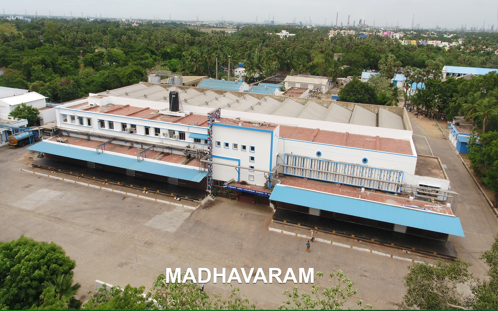

History
Madhavaram was originally a suburban settlement that gradually developed into a major residential locality after the expansion of Chennai city.
-
The area witnessed rapid infrastructure growth including:
- Roads
- Bridges
- Metro Rail Projects
- Bus Terminus
- Water Supply
- Housing Projects
Cultural Heritage and the Legacy of the Milk Colony
The identity of Madhavaram is deeply rooted in the iconic Madhavaram Milk Colony, a historic 1,200-acre green oasis established in the late 1950s that revolutionized dairy production in Tamil Nadu. Today, this sprawling, eco-friendly landscape not only preserves its agrarian heritage through a unique local economy but also houses the lush Madhavaram Botanical Garden, making the constituency a rare blend of green sanctuary and modern urban life.
Major Localities
- Madhavaram
- Puzhal
- Mathur
- Kodungaiyur
- Moolakadai
- Retteri
- Milk Colony
- Surapet
